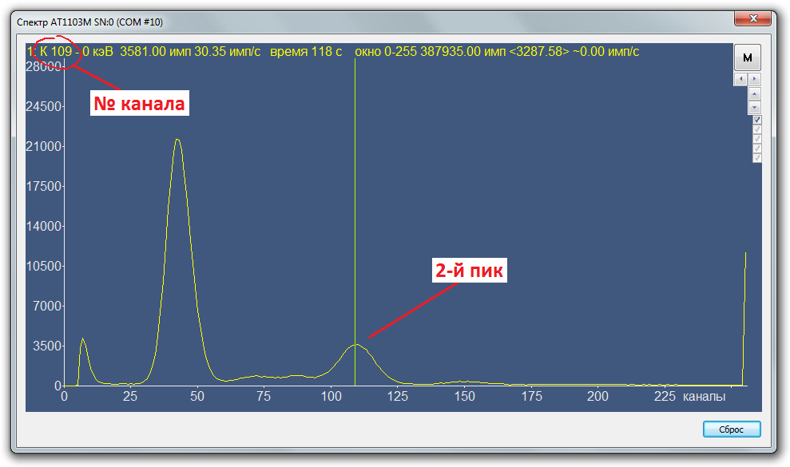

1103M. Предварительная калибровка по Ba133
- Подключите прибор к ПЭВМ с помощь кабеля БД через модуль адаптера USB-БД
- Переведите прибор в спектрометрический режим F5
- Закрепить на "колпачке" прибора источниик Барий (Ba)
- Запустите программу ATAS tech. Нажмите режим «инициализировать соединение». Программа должна обнаружить прибор и вывести на экран спектр, считываемый с прибора. То же (и проще) можно сделать с помощью BackgroundCalibration: запустить BG, выбрать дозиметр, нажать спектр. Режим F5 включится автоматически:
- При помощи подборочного резистора R13 грубо и потенциометра R16 платы преобразователя «ФОН» (рис. 10)
точно установите второй пик спектра Ba133 в 109±1 канал. При этом первый пик Ba133 должен находится примерно
в
42 канале:


- Чтобы переместить пик влево, сопротивление резистора R13 нужно увеличить
- Чтобы переместить пик вправо, сопротивление резистора R13 нужно уменьшить
Чтобы не подбирать резистор, можно воспользоваться формулой: 47/х*1090, где х — это № канала при 470кОм. Или воспользоваться формой:
- Чтобы переместить пик влево, подстроечный нужно повернуть по часовой
- Чтобы переместить пик вправо, подстроечный нужно повернуть по против часовой Один канал — это, примерно, четверть оборота. Данные записать в паспорт ("R13" и "Ba 109")


С помощью подбора резистора R13 канал устанавливается примерно, плюс-минус 5 каналов. Поэтому для более точной настройки прменяется подстроечный резистор R16: